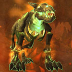
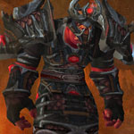
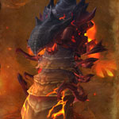

You can find the Ragefire Chasm dungeon within Orgrimmar, Kalimdor.
The coordinates of The Drag entrance are (55.8,51.1)

Route:
Map 1

Bosses:
1. Adarogg2. Dark Shaman Koranthal3. Slagmaw4. Lava Guard Gordoth

Quick Boss Tactics:/i Charges at a random player, move out of the way. Breathes flames inflicting fire damage to a player.

Quick Boss Tactics:/i Interrupt ‘Twisted Elements’. Avoid the purple swirls on the floor.

Quick Boss Tactics:/i Spits lava at a players location. Get ready to attack when slagmaw emerges at a new location.
Quick Boss Tactics:
/i Group will take damage from ground attacks/knock backs. Enrages at 30% health increasing his speed & damage done, nuke boss.
/i Group will take damage from ground attacks/knock backs. Enrages at 30% health increasing his speed & damage done, nuke boss.